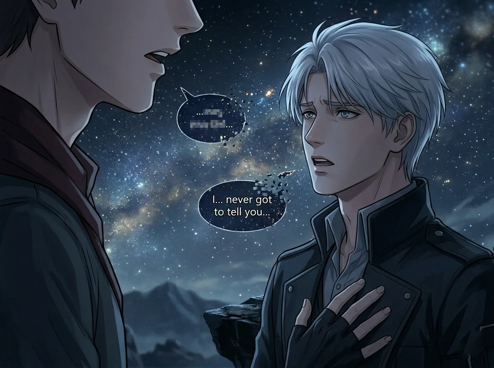
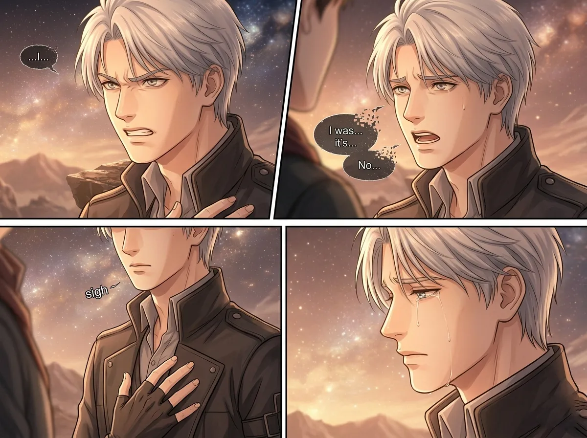
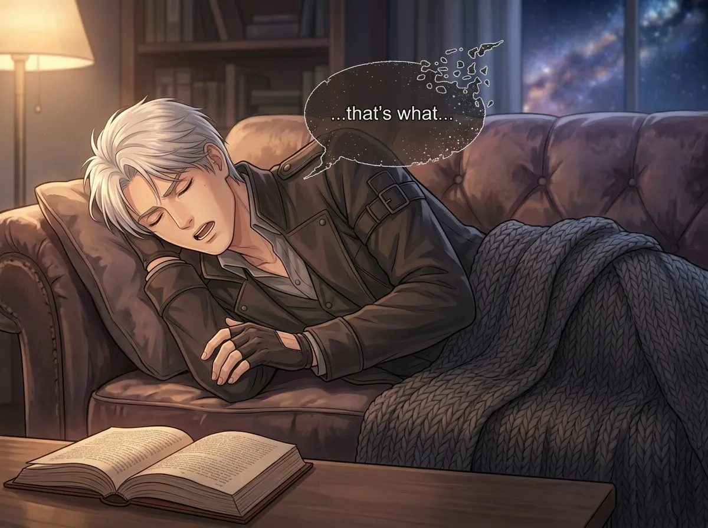
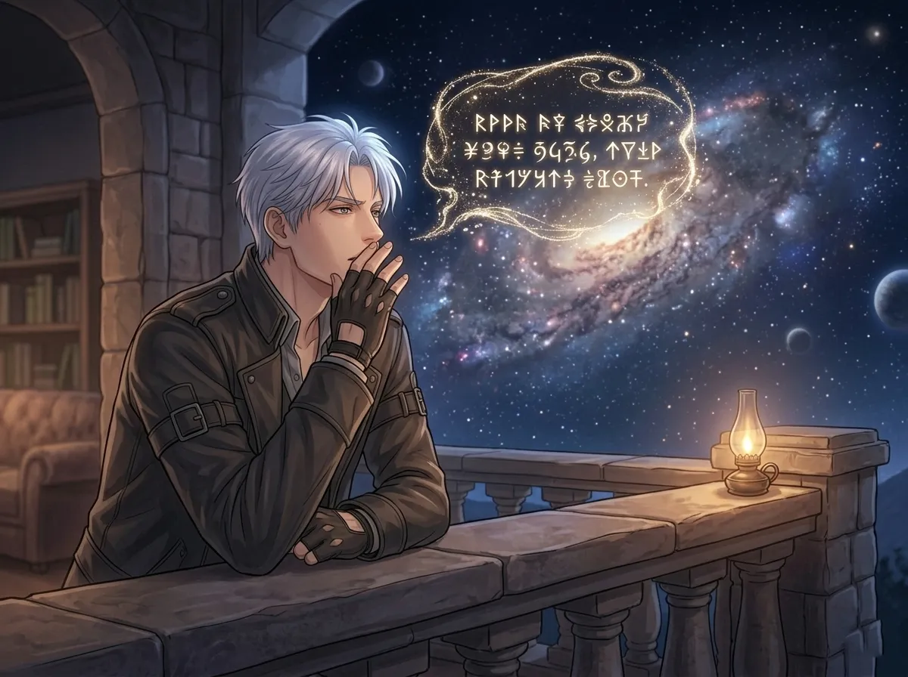
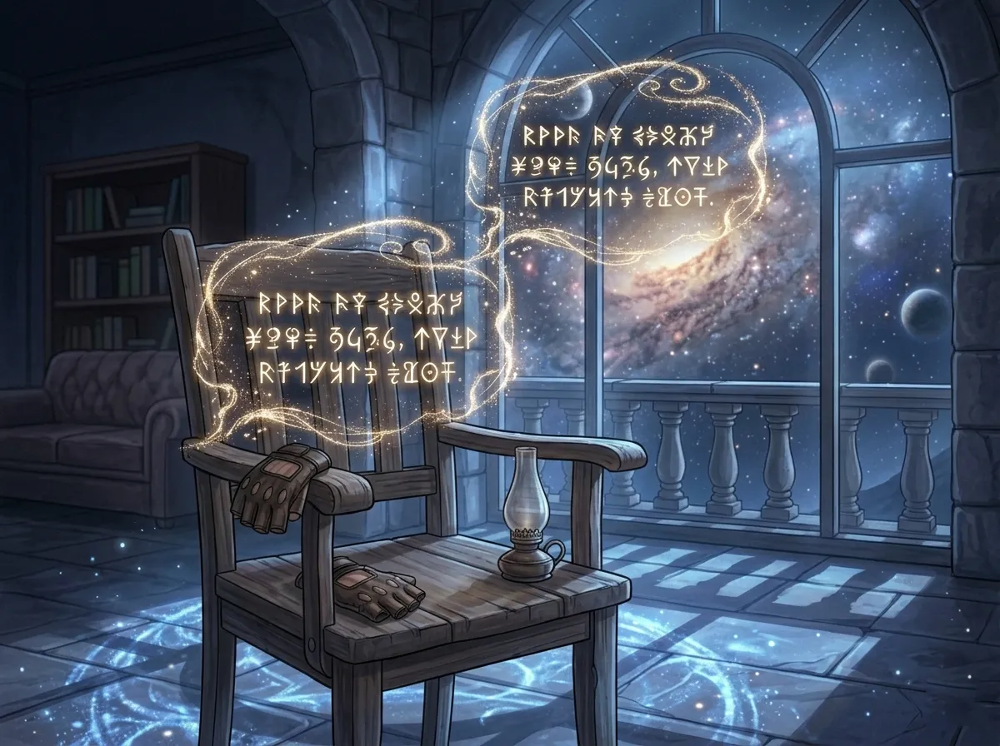
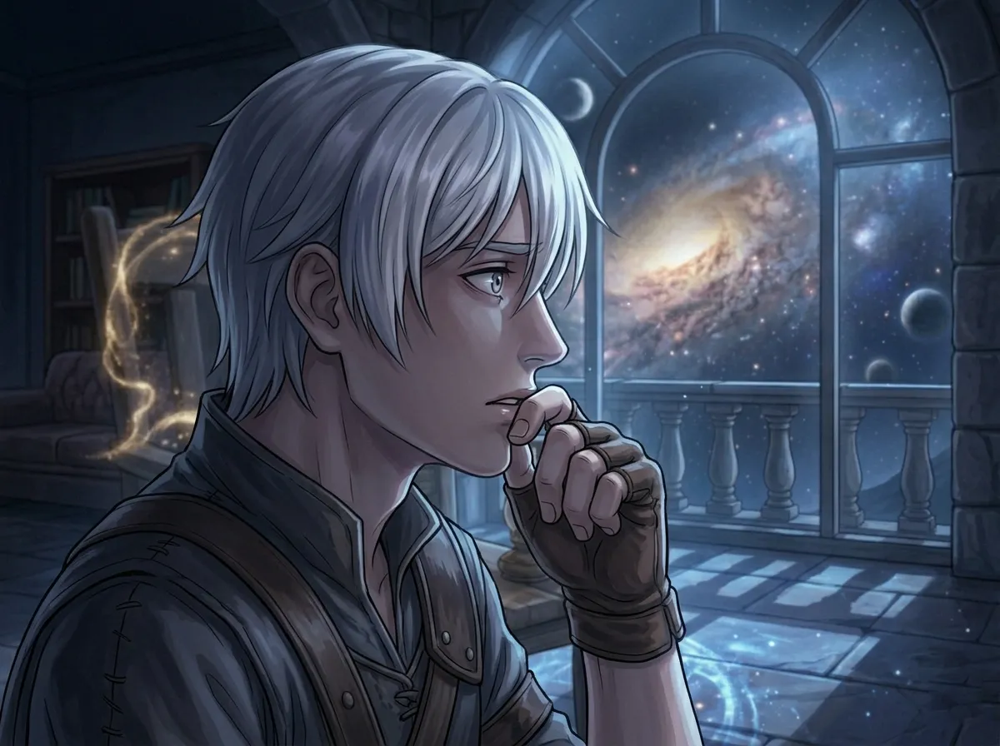

A dialogue archaeology — the half-finished sentences he swallowed
Xavier speaks more than you think. Not in words. In halves. In starts. In sentences that trail off like smoke.
He starts talking. Then stops. Like he changed his mind. Or like he remembered that saying things out loud makes them real. And if they're real, he can't pretend anymore.
This is a collection of those moments. Every time Xavier almost said something. Every time he stopped himself. Every time the words got to his lips, hovered there, and dissolved.
There are twelve. They're not all from the same conversation. They're not all directed at the same person. But they're all Xavier. All of him. All the things he almost admitted.
He was looking at the stars. She was next to him. He didn't turn his head. He just said it. Then he changed his mind.
"I've been waiting for..." — this is the most honest Xavier ever gets. He was waiting. Not for the stars. Not for the night. For her. Two hundred years of waiting, and he almost said it.
Then he stopped. Said "nothing." There's nothing in the world that's "nothing" to Xavier. He doesn't have nothing. He has everything — and he can't say any of it.
She didn't push. She never pushes. That's why he almost said it. And that's why he didn't.
He looked at her. For a moment. Just a moment. His eyes did something. Something soft. Something tired. Something older than his face.
"You look like..." — like someone I used to know. Like someone I've been waiting for. Like the person I dreamed about in a life I don't remember.
He swallows it. Every time. Because saying it would mean admitting that he sees her. Not as a colleague. Not as a friend. As everything.
"Never mind" is Xavier's favorite lie. He always minded. He just learned not to say it.

He never said what he was going to say. He let the interruption take it. He let it go. Because maybe it was easier that way.
Maybe he was relieved.
The interruption wasn't a coincidence. Xavier could have finished the sentence. He didn't want to. He let the other person talk. He stepped back. Into silence.
What was he going to say? "I just wanted to say that I..." — love you? Miss you? Notice you? Need you?
He never finished. He never tried again. He just let it go. Like he lets everything go.
But he remembered. He always remembers.
He didn't say anything. He almost did. His lips moved. Just a little. A word. A name. Something that never became sound.
This is the quietest entry. There's no text. No dialogue. Just a moment of almost.
He was standing behind her. She didn't know he was there. He watched her for a second. He opened his mouth. He almost said her name. Just her name. Nothing else.
He didn't. He turned away. Walked back to the observatory. Sat alone. Didn't sleep.
The name was right there. On his tongue. He swallowed it.

He tried. Twice. The first time, he stopped himself. The second time, he gave up completely.
It was important. He knew it was important. She knew it was important. But he couldn't get it out. Not that day.
This is the pattern. Xavier tries. He gets close. Then he pulls back. Not because he doesn't want to say it — because he's afraid of what happens after.
He's been alive for too long. He's lost too much. Every time he says something real, something goes away. He's learned to keep things inside. Because inside is safe.
She didn't push. She waited. She always waits.
He said it. Simple. Short. Everyone heard it.
No one heard what he meant.
"I'm glad you're here" — everyone says that. It's polite. It's normal. It means "I enjoy your company."
For Xavier, it meant something else. It meant "I've been alone for two hundred years and I forgot what it felt like to not be." It meant "You make the stars look like they mean something." It meant "Please don't leave."
He said it like it was nothing. Because if he said it like it was everything, she would have heard. And he wasn't ready for that.

He was tired. He was always tired. But this time, he was mid-word. His eyes closed. His voice stopped. The sentence hung in the air, unfinished.
This one is almost funny. Almost. He fell asleep because he never sleeps enough. Because he spends too many nights looking at stars and thinking about things he can't say.
What was he going to say? "Before I fall asleep" — maybe. "Before I lose my nerve" — maybe. "Before I change my mind" — definitely.
She waited. She always waits. He woke up hours later. He didn't remember what he was going to say.
She didn't remind him.
He came to her door. Purpose. Determination. He was going to say it. He rehearsed it. He practiced it. He was ready.
Then she opened the door. And he knew. He was too late. For what, he didn't know. But he was too late.
He never says what he came to say. He never tries again. He just... lets it go. Like everything else.
"It doesn't matter now" — the lie of someone who knows it will never stop mattering. He'll think about this moment. Years from now. He'll wonder what would have happened if he had said it a day earlier. A minute earlier.
He'll never know. He'll never ask.

He said it quietly. To himself. In a language that doesn't exist anymore. A language from a place that no longer exists.
She was nearby. She didn't understand a word. But she heard his voice. And it sounded like goodbye.
He said it in a language no one else speaks. Not because he wanted to hide it. Because there were no words for it in any language she would understand. Some things are too old. Too deep. Too far away.
She asked him later. "What did you say?"
He said, "Nothing. Just the stars."
She didn't believe him. She didn't push.
This was the closest he ever got. He said "someone." He meant "everything." He said "used to know." He meant "still know. Still dream about. Still hope I can save."
"Someone I used to know" — the most honest Xavier has ever been. He didn't say "her name." He didn't say "you." He said "someone." That was enough. That was almost everything.
She asked, "Who?"
He said, "I don't remember."
He remembered. He remembered everything.

He was leaving. For a mission. For a long time. He stood at the door. He turned back. He looked at her. His mouth opened. Nothing came out.
He left. The words stayed.
This is the one that haunts him. The one he wishes he had said. The one he'll think about in the dark. The one that would have changed everything.
He didn't say it. Because if he said it, he would have had to stay. And if he stayed, he would have had to live with what came next.
He left. The words stayed in the room. They're still there. Waiting.

He never finished it. The mission happened. The moment passed. He came back. But the sentence didn't.
It stayed unfinished. Like so many things.
This is the one that hurts the most. Not because he didn't finish it — because he never tried again. He had a chance. He had a moment. He let it go.
"If I don't come back, I want you to know that..." — that I loved you. That I waited for you. That you were the reason I came back. That you are everything.
He didn't finish it. He came back. He never brought it up again. And she never asked.
The sentence is still out there. Somewhere. In the space between what he almost said and what he actually did.
There is one more. It doesn't appear in any transcript. He never spoke it. Never typed it. Never wrote it down.
He thought it. Once. Late at night. Alone in the observatory. The words formed in his mind. Clear. Complete. Perfect.
He didn't say them. Not out loud. Not to anyone. Not even to himself in the dark.
He let them dissolve.
What were they? No one knows. Not even him, anymore. He pushed them so far down that he forgot the shape of them. All he remembers is that they existed. And that he couldn't let them exist.
That silence — the one where he never even tried — that is the most Xavier thing of all.
Xavier is a person who has learned not to say things. He has learned that saying things makes them real. And if they're real, they can be taken away.
He never said it. He never tried. He let it die before it became a word.
That's not weakness. That's survival. That's two hundred years of practice. That's a man who has loved and lost so many times that the only way to keep loving is to not say it.
She never knew. She will never know. That's the tragedy. That's the gift.
Xavier almost says things. All the time. He starts sentences he doesn't finish. He opens his mouth and closes it. He swallows words whole.
This is not because he doesn't feel. This is because he feels too much. He has been alive too long. He has lost too much. Every word he says is a risk. Every sentence is a vulnerability.
He almost said it. Twelve times. And once, he didn't even try.
But the sentences are still there. Hanging in the air. Waiting for a voice to finish them. Waiting for the moment when he stops being afraid of what comes after.
He may never finish them. He may live the rest of his life in half-sentences and almost-admissions.
But she knows. She always knows.